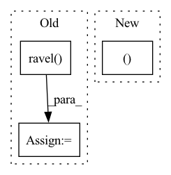

Pattern ID :34438
Before Change
def processing_op(x,op,w,C):
assert op == ProcessingOps.CONV, f"{op} isn"t supported"
x = x.movement_op(MovementOps.SLICE, ((0, x.shape[0]), (0, x.shape[1]), (-C.py, x.shape[2]+C.py_), (-C.px, x.shape[3]+C.px_)))
gx = x.ravel() .reshape(C.bs,C.groups,C.cin,x.shape[2],x.shape[3])
tx = np.lib.stride_tricks.as_strided(gx,
shape=(C.bs, C.groups, C.cin, C.H, C.W, C.oy, C.ox),
strides=(*gx.strides[0:3], gx.strides[3]*C.dy, gx.strides[4]*C.dx, gx.strides[3]*C.sy, gx.strides[4]*C.sx))
tw = w.reshape(C.groups, C.rcout, C.cin, C.H, C.W)
// too bad this doesn"t mix with stride_tricks, it can be very slow
//out = np.einsum("nGCHWhw, GkCHW -> nGkhw", tx, tw)
// 3 lines is faster than 1
tmp = np.empty((C.groups,C.rcout,C.bs,C.oy,C.ox), dtype=x.dtype)
for g in range(C.groups): tmp[g] = np.tensordot(tw[g], tx[:,g], ((1,2,3),(1,2,3)))
out = np.einsum("Gknhw -> nGkhw", tmp)
return out.reshape(C.bs, C.groups*C.rcout, C.oy, C.ox).view(CPUBuffer)After Change
x = x.movement_op(MovementOps.SLICE, ((0, x.shape[0]), (0, x.shape[1]), (-C.py, x.shape[2]+C.py_), (-C.px, x.shape[3]+C.px_)))
tx = x.movement_op(MovementOps.STRIDED, (
(C.bs, C.groups*C.cin*x.shape[2]*x.shape[3]), (C.groups, C.cin*x.shape[2]*x.shape[3]),
(C.oy, C.sy*x.shape[3]), (C.ox, C.sx ), (C.cin, x.shape[2]*x.shape[3]), (C.H, C.dy*x.shape[3]), (C.W, C.dx)))
tw = w.reshape(C.groups, C.rcout, C.cin, C.H, C.W)
out = np.einsum("nGhwCHW, GkCHW -> nGkhw", tx.contiguous(), tw.contiguous())
return out.reshape(C.bs, C.groups*C.rcout, C.oy, C.ox).view(CPUBuffer)In pattern: SUPERPATTERN
Frequency: 4
Non-data size: 3
Instances Fragment ID: 98797858
Project Name: geohot/tinygrad
Commit Name: bcf422dfdd9a507df433973d86a89a75656f6aa1
Time: 2022-07-16
Author: 72895+geohot@users.noreply.github.com
File Name: tinygrad/llops/ops_cpu.py
M Class Name: CPUBuffer
N Class Name: CPUBuffer
M Method Name: processing_op(4)
N Method Name: processing_op(4)
M Parent Class: np.ndarray
N Parent Class: np.ndarray
M File Name: tinygrad/llops/ops_cpu.py
N File Name: tinygrad/llops/ops_cpu.py
M Start Line: 51
M End Line: 64
N Start Line: 52
N End Line: 57
Before Change
zvalues = []
X,Y = np.where(img > 0)
P = img[X,Y].ravel()
// Normalize the coordinates to the center of mass and normalize
// pixel distances using the maximum radius argument (radius)
cofx,cofy = center_of_mass(img)After Change
c0,c1 = center_of_mass(img)
Y,X = np.where(img > 0)
P = img[Y,X ].ravel()
def rescale(C, centre):
Cn = C.astype(np.double)
Cn -= centre Fragment ID: 98797851
Project Name: luispedro/mahotas
Commit Name: 6ebd7769b31300ab5af9128c47c50b5746316c88
Time: 2010-08-23
Author: lpc@cmu.edu
File Name: mahotas/zernike.py
M Class Name: AnonimousClass
N Class Name: AnonimousClass
M Method Name: zernike(3)
N Method Name: zernike(4)
M Parent Class:
N Parent Class:
M File Name: mahotas/zernike.py
N File Name: mahotas/zernike.py
M Start Line: 37
M End Line: 79
N Start Line: 54
N End Line: 74
Before Change
y_test = dataset.prepare("test", col_set="label")
pred_score, y_test, __ = drop_nan_by_y_index(pred_score, y_test)
model_pearsonr = pearsonr(np.ravel(pred_score.values), np.ravel( y_test.values) )[0]
return pred_score, {"model_pearsonr": model_pearsonr}, rid
After Change
ic = sar.load(sar.get_path("ic.pkl"))
ric = sar.load(sar.get_path("ric.pkl"))
return pred_score, {"ic": ic, "ric": ric}, rid
def backtest_analysis(pred, rid):
backtest and analysis Fragment ID: 98797832
Project Name: microsoft/qlib
Commit Name: 89586562226b1f3aaf4b38ef283af92ffe105e71
Time: 2020-11-21
Author: dw1920@nyu.edu
File Name: tests/test_all_pipeline.py
M Class Name: AnonimousClass
N Class Name: AnonimousClass
M Method Name: train(0)
N Method Name: train(0)
M Parent Class:
N Parent Class:
M File Name: tests/test_all_pipeline.py
N File Name: tests/test_all_pipeline.py
M Start Line: 112
M End Line: 130
N Start Line: 119
N End Line: 131
Before Change
gx.strides[3], gx.strides[4]),
writeable=False,
)
tx = np.ravel( tx) .reshape(tx.shape)
tw = w.reshape(ctx.groups, rcout, cin, H, W)
ctx.save_for_backward(tx, tw, x.shape)
return np.einsum("igjYXyx,gkjyx -> igkYX", tx, tw).reshape(bs, cout, oy, ox)After Change
ret = np.zeros((bs,ctx.groups,rcout,oy,ox),dtype=x.dtype)
for g in range(ctx.groups):
//ijYXyx,kjyx -> iYXk ->ikYX
ret[:,g]+=np.moveaxis(np.tensordot(tx[:,g], tw[g],((1,4,5 ),(1,2,3))),3,1)
return ret.reshape(bs, cout, oy, ox)
Fragment ID: 98797836
Project Name: geohot/tinygrad
Commit Name: af5a4e0f5a3be62bd29e0220e1acee09be808645
Time: 2020-11-02
Author: 65973015+marcelbischoff@users.noreply.github.com
File Name: tinygrad/ops.py
M Class Name: Conv2D
N Class Name: Conv2D
M Method Name: forward(5)
N Method Name: forward(5)
M Parent Class: Function
N Parent Class: Function
M File Name: tinygrad/ops.py
N File Name: tinygrad/ops.py
M Start Line: 175
M End Line: 185
N Start Line: 172
N End Line: 189